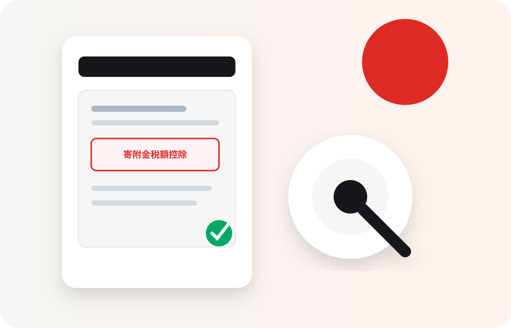
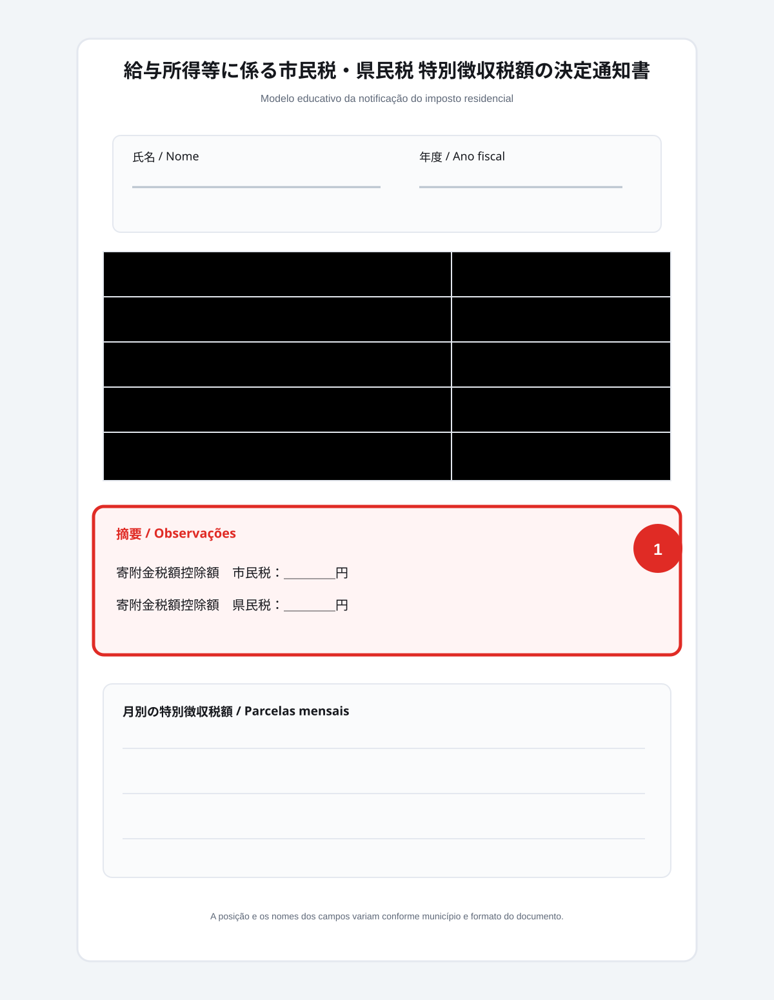

Impostos
Como conferir o desconto do Furusato Nozei
O documento principal para quem usou o One-Stop é a notificação do imposto residencial do ano seguinte.
Veja quando ela chega, quais termos japoneses procurar e o que fazer se o valor estiver ausente ou diferente do esperado.

Resposta rápida
Quem usou corretamente o One-Stop deve procurar a dedução no 住民税決定通知書 (notificação de determinação do imposto residencial), recebido por volta de maio ou junho do ano seguinte. O nome e a posição exatos do campo variam por município, mas procure os termos 寄附金税額控除 (dedução por doações) e a área de 摘要 (observações).
Primeiro: qual procedimento você usou?
A forma de conferência muda conforme o caminho fiscal.
Usei o One-Stop
A dedução aplicável aparece inteira no imposto residencial do ano seguinte. Não espere uma transferência separada do imposto de renda.
Fiz declaração (kakutei shinkoku)
Parte do benefício pode aparecer como restituição ou redução do imposto de renda, e parte no imposto residencial. Compare os dois documentos.
Onde olhar no documento
Este é um modelo educativo. Compare os termos japoneses com a sua notificação real — a posição dos campos varia por município.

Algumas cidades mostram o valor na área de observações (摘要); outras distribuem a informação em campos separados de dedução municipal e provincial. Nunca use esta ilustração como documento oficial.
Conferência em quatro passos
- 1
Some suas doações
Use comprovantes e histórico das plataformas, não apenas o valor dos presentes recebidos.
- 2
Subtraia a parcela própria
Como referência inicial, compare com o total elegível menos ¥2.000, respeitando seu limite.
- 3
Procure os campos japoneses
Busque 寄附金税額控除, 税額控除額 ou informações na área de 摘要.
- 4
Considere o método usado
Na declaração, parte do benefício pode já ter aparecido separadamente no imposto de renda.
O valor não apareceu?
Confira se o One-Stop foi aceito, se você fez declaração posteriormente, se incluiu todas as doações nela e se os dados de nome e endereço estavam corretos.
Se houver dúvida, leve os comprovantes, a confirmação do One-Stop e a notificação até a prefeitura ou até o profissional responsável. Não altere valores por conta própria.
Perguntas frequentes
Quando recebo o documento?
Por que o valor não é exatamente igual à doação menos ¥2.000?
Meu empregador entrega o documento?
Posso conferir só pelo comprovante do presente?
Fontes consultadas
- Agência Nacional de Impostos do Japão (国税庁) — tratamento do Furusato Nozei no One-Stop e na declaração de imposto.
- Guias municipais de imposto residencial — formatos e terminologia da notificação variam por prefeitura.
Modelo educativo. Confirme sempre o documento específico do seu município antes de tomar decisões.
Continue a jornada
Depois de conferir o desconto, guarde os documentos e planeje o limite do próximo ano.